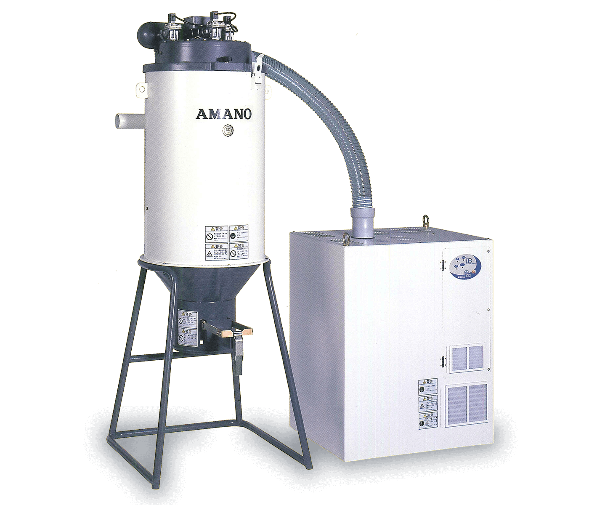

粉體回收真空集塵機
Powder Recovery Vacuum Collector
- 粉體回收真空集塵

說明
- 內藏回旋流分離部 ， 增長濾管壽命
- 大面積過濾管 ，集塵性能穩定
- 拆卸簡單，安裝方便，保養維護更簡便
- 粉塵取出容易 ，並有飛散防止功能
型式
- 標準型
- 微粉型
- 防爆型
規格表
| 風量 | 管徑 | 動力 | 噪音 |
|---|---|---|---|
| 4M3/Min | 2” | 5HP | 72dBA |
| 6M3/Min | 2.5” | 7.5HP | 72dBA |
Powder Recovery Vacuum Collector
| 風量 | 管徑 | 動力 | 噪音 |
|---|---|---|---|
| 4M3/Min | 2” | 5HP | 72dBA |
| 6M3/Min | 2.5” | 7.5HP | 72dBA |